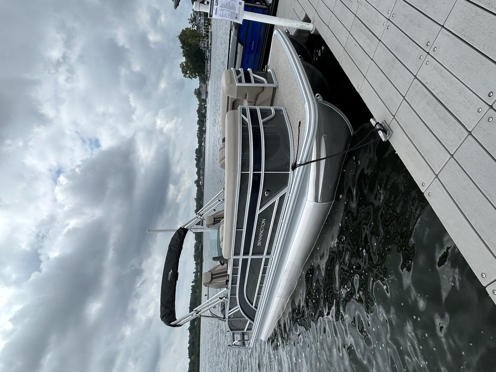

INFO
Boat Specefications
- MSRP: $123,482
- LOA: 22'-11.5"
- Beam: 8'6"
- Engine: Yamaha VF250XB
- Perfromance Package: SPS
- Floorplan: Swingback
- Exterior Main Color: Anthracite
- Exterior Accent Color: Midnight Blue
- Rail Color: Silver
- Interior Main Color: Dolce Veneto
- Interior Accent Color: Espresso
- Interior Furniture Style/Trim: Sport
What's New for 2027
2027 updates
- Dayshade Bimini: Enjoy more time on the water in comfort with Bennington's new DayShade Bimini and available Bow Shade, which provides additional forward sun protection as an affordable alternative to a forward Bimini. Featuring 10 feet of extended coverage and simple one-person operation. Multiple operating positions make it easy to move from crusising to trailering, while the integrated flexible all-around light and LED courtesy lighting deliver added convenience, safety, and premium styling day or night.
- Stage 3 Audio Package: Stage 3 Audio Package features a premium Rockford Fosgate sound system with PMX-R20B Head Unit and Aft Remote controls, six RGB-capable speakers, and a powerful 10" PMPS-10 subwoofer/amplifier combination. The result is rich, immersive sound and customizable lighting that bring a luxury entertainment experience to every day on the water.
- Sure Step Ladder: Features wide, stair-style steps that provide easier, more comfortable boarding from the water. The ergonomic design improves stability and confidence for swimmers of all ages, creating a safer and more enjoyable on-water experience.
Why This Boat
Key Selling Points
- Big 250HP Yamaha power makes this Swingback a genuine watersports and high-speed performer.
- Sport trim adds an athletic, performance-minded look and feel.
- Stage 3 Rockford Fosgate audio with helm controls and RGB speakers for immersive sound.
- New Sure Step stair-style ladder makes boarding from the water easy and stable.
- DayShade Bimini plus Bow Shade keeps the whole boat shaded on hot days.